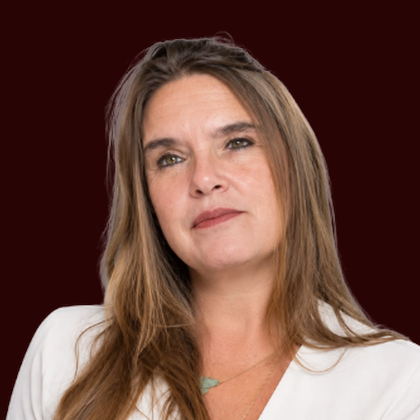

4º Congresso sobre
Câncer
Auditório Principal
Sexta-feira · Tarde
20 de novembro de 2026 · São José dos Campos
2 / 4

14:00
Dr. Alessandro Loiola
Médico

14:40
Dra. Thaís Bragatto
Naturopata e Fisioterapeuta
Destoxificação e Microbiota Intestinal na Prevenção e Remissão do Câncer

15:20
Dra. Daniela Belisario Baroni
Ortodontista e Naturopata
Câncer Além da Célula: Biofísica e Frequências na Visão Integrativa

16:00
Dr. Prof. Anilson Martins
Professor e Terapeuta
Câncer: o pH do Microambiente Tumoral Importa

16:40
Dra. Lucy Kerr
Médica
Própolis verde

17:20
Dr. José Augusto Nasser dos Santos
Médico
Abordagem Metabólica Integrativa do Câncer

18:00
Dra. Fernanda Moraes
Especialista em Saúde Integrativa
Uso dos Peptídeos na Saúde Mitocondrial

18:40
Lis Curay
Artista da Cura
O Cântico da Origem — A Vida que Permanece

19:20
Dra. Claudia Riecken
Neurocientista · Quantum Lab
A regeneração da família na cura do câncer e leucemia nas crianças